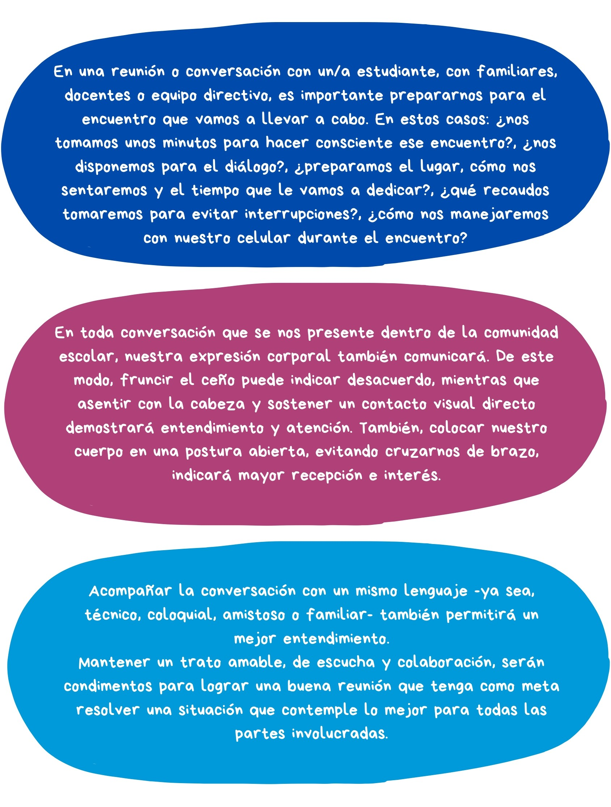

Vimos que siempre nos estamos comunicando y que, en esa comunicación, podemos encontrar una herramienta para entendernos e interactuar de manera pacífica. Hablar de asertividad implica poder expresar a los demás lo que sentimos, deseamos y pensamos, de forma clara, simple y oportuna.
¿Cómo implementamos esta herramienta en la escuela?
En las instituciones educativas confluyen innumerables situaciones y espacios que requieren poner en práctica la comunicación asertiva y así adquirirla como hábito. Teniendo en cuenta lo descripto hasta ahora, invitamos a reflexionar sobre las siguientes consideraciones:

Recordemos que siempre es necesario identificar cuál es nuestro estilo de comunicación -referido en el módulo 1- a la hora de abordar una situación conflictiva, para así poder reverlo.
En el próximo módulo continuaremos con el resto de herramientas mencionadas para el desarrollo de habilidades de gestión y resolución de conflictos. Invitamos a transitar el último tramo📚